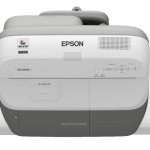

{kind=link}
![24135_1328480905706_1641469960_803992_2857219_n[1]](https://mclear.co.uk/wp-content/uploads/2010/03/24135_1328480905706_1641469960_803992_2857219_n1.jpg "24135_1328480905706_1641469960_803992_2857219_n[1]")

When using the board close up the reflected glare from a normal dry wipe board is so extreme that is hurt my head after only a few minutes. The device I used the Projector on was very slow to pick up the driver and in some instances it had to be started manually, I’m not sure if this is an installation error or an error with the software that is shipped with the device.
This projector could save the average classroom over £1000 plus the maintenance cost of the board so it could be a much more cost effective solution. I also found that the projector I was using was incredibly blury in the bottom left corner, the rest of the projected image was fine. See picture below:
*UPDATE: On the projector their is a manual focus just by the lens. This fixes the blurring - This is not well documented by Epson.
![Reblog this post [with Zemanta]](images/reblog_e.png)